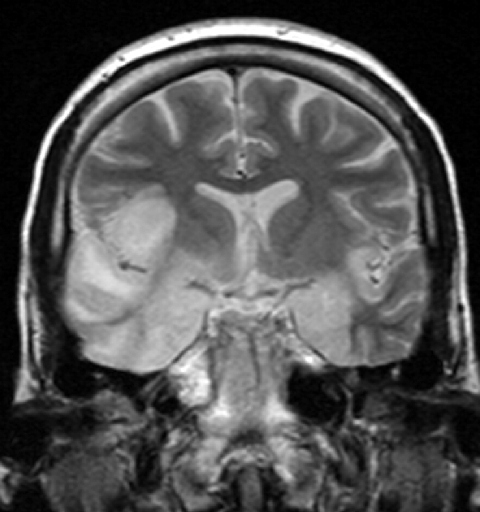

Ficha del catálogo
Encefalitis por virus del herpes simple
- Sistema
- Nervioso
- Modalidad
- RM
- Región
- Lóbulos temporales mediales, ínsula y giro del cíngulo
- Dificultad
- Avanzado
La encefalitis por virus del herpes simple es la encefalitis esporádica grave más frecuente y una urgencia médica, porque el retraso del tratamiento antiviral empeora de forma decisiva el pronóstico. Se presenta con fiebre, alteración del comportamiento, trastorno de la memoria, crisis convulsivas y disminución del nivel de conciencia.
Técnica
Resonancia magnética con FLAIR, T2, difusión con mapa de coeficiente aparente, secuencia sensible a susceptibilidad y T1 con contraste. La difusión y el FLAIR son las secuencias que antes muestran la alteración.
Qué observar
- Hiperintensidad cortical y subcortical en la cara medial del lóbulo temporal
- Extensión a la ínsula, al giro del cíngulo y a la corteza frontal basal
- Restricción a la difusión en la fase precoz
- Distribución bilateral pero asimétrica
- Preservación relativa del núcleo lenticular
- Aparición tardía de componente hemorrágico y de realce giral
Hallazgos
Se observa aumento de señal en FLAIR y T2 con tumefacción de la corteza y de la sustancia blanca subcortical del lóbulo temporal medial, con extensión típica a la ínsula, al giro del cíngulo y a la porción inferior del lóbulo frontal. La afectación suele ser bilateral y asimétrica, y en fases iniciales la difusión ya está restringida. Con la evolución aparecen focos hemorrágicos en la secuencia de susceptibilidad y realce giral o meníngeo, y en fases tardías queda encefalomalacia con pérdida de volumen.
Perlas
El límite neto entre la ínsula afectada y el putamen respetado es un dato de gran valor, porque el infarto de la arteria cerebral media compromete ambos y la encefalitis tiende a respetar el núcleo lenticular. Ante un cuadro compatible el tratamiento antiviral debe iniciarse sin esperar la confirmación, ya que la imagen puede ser normal en las primeras horas.
Diagnóstico diferencial
- Infarto de la arteria cerebral media
- Respeta un territorio arterial, incluye el núcleo lenticular y suele ser unilateral con instauración brusca.
- Encefalitis autoinmunitaria límbica
- Afectación bilateral más simétrica de hipocampos sin hemorragia ni tumefacción marcada, con evolución subaguda.
- Estado epiléptico con edema cortical
- Los cambios siguen la corteza de forma más difusa, se acompañan de hiperperfusión y revierten al controlar las crisis.
- Glioma infiltrante temporal
- Predomina en sustancia blanca con efecto de masa progresivo, sin fiebre ni instauración aguda.
Simuladores
- Artefacto de susceptibilidad del lóbulo temporal junto al peñasco
- Asimetría de señal por posicionamiento oblicuo
- Esclerosis mesial temporal crónica sin tumefacción
Por modalidad
- TC
- Suele ser normal en las primeras horas y solo en fases avanzadas muestra hipodensidad temporal, por lo que no sirve para excluir la enfermedad.
- RM
- Es la técnica de elección por su detección precoz de la alteración cortical y por la caracterización de la extensión.
Protocolo
Estudio urgente con FLAIR, difusión, T2, susceptibilidad y T1 con contraste; conviene repetir la resonancia en pocos días si la primera es normal y la sospecha clínica se mantiene, ya que la afectación puede hacerse evidente después.
Clasificación
Errores frecuentes
- Excluir la encefalitis por una tomografía normal
- Interpretar la afectación como infarto y no iniciar tratamiento antiviral
- No repetir el estudio cuando la primera resonancia es precoz y negativa

encefalitis herpética lóbulo temporal medial ínsula difusión urgencia neurológica infección viral